正文
本来要继续写上节所遗留的第一个中枢形成后走势类型的分类问题，但发现太多人，连每天如何看盘都搞不清楚，这事情可能更迫切，所以先说一下。
当然，如果是按某级别的严格操作，每天具体怎么走是关系不大的，走势不会因为交易是按天来的就有什么本质的不同。但针对每天的走势进行一些分类，至少是一个好的辅助。
一天的交易是 4 小时，等于有 8 个 30 分钟 K 线组成的一个系统。把 3 个相邻 30 分钟 K 线的重叠部分当成一个每天走势上的一个中枢，那么，一般来说显然，任何一天的走势，无非只有三类：一、只有一个中枢；二、两个中枢。三、没有中枢，其力度依次趋强。
一、只有一个中枢
这种走势，是典型的平衡市，一般情况下，开盘后前三根 30 分钟 K 线就决定了全天的波动区间，而全天的极限位置，基本上，至少有一个都出现在这前三根 30 分钟 K 线上，不是创出当天高点，就是创出当天低点。当然，这不是完全绝对的，因此可以对这种情况进行更细致的分类。
-
在前三根 30 分钟 K 线出现当天高点
这可以称为 弱平衡市 ，其中最弱的是当天低点收，注意，这和当天是否红盘无关，高开最后红盘收也可以形成这种最弱的弱平衡市。次弱是收在中枢之下，收在中枢是一般的弱平衡市；收在当天高点附近的是最强的一种。
-
在前三根 30 分钟 K 线出现当天低点
这可以称为 强平衡市 ，其中最强的，就是以当天高点收，同样，这与当天是否红盘无关。次强是收在中枢之上，收在中枢是一般的强平衡市；收在当天低点附近的是最弱的一种。
-
在前三根 30 分钟 K 线不出现当天高低点
这可以称为 转折平衡市 ，同样可以像上面情况一样根据收盘位置定义其强弱。
注意，以上三种情况中枢的位置不一定是前三根 30 分钟 K 线的重叠，可以是后面几根的。walter( 跳空缺口也要当成 K 线的延长部分处理 )
二、两个中枢
显然，这根据两中枢的前后方向可以分为向上、向下两种，一般地，讨论向上的情况，向下的情况反过来就是。
两个中枢，显然不能有重叠的地方，否则就会转化成上面的情形。因此，这种形态，最大的特点就是这两个中枢之间有至少有一个 30 分钟 K 线，其中有部分区间是不属于两个中枢的任何一个，这个区间，成为单边区间，这是这种走势最重要的特点，是其后走势的关键位置。注意，具有单边区间的 K 线不从属任何一个中枢。
由于只有 8 根 30 分钟 K 线，根据单边区间所在位置，无非是两种可能：
- 单边区间在第四根 30 分钟 K 线。
- 单边区间在第五根 30 分钟 K 线。
由此就知道，为什么所有出现单边走势的，变盘时间都在中午收盘的前后 30 分钟之内。
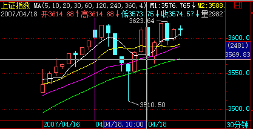
当然，第 4 第 5 根 30 分钟 K 线可以同时具有单边区间。如果只有第 4 根 K 线具有单边区间的情况，那么第八根 K 线，有可能出现穿越单边区间的情况，例如，昨天 20070417 的走势。
显然， 对于上涨的情况来说 ，最强的就是 收盘在第二中枢的上方 ，最弱的，就是出现第八根 K 线出现 ( 反向 ) 穿越单边区间 的情况，最终收在第一个中枢的之下。然后 根据收盘的位置 ，可以依次定出其他的强弱。
(walter: 首先确定 30F 重叠的范围（应该是 5 分钟中枢），再根据收盘位置确定收盘价格对于中枢而言的其强弱。这也是一种测度方法 )
三、没有中枢
这是最强的单边走势，8 根 K 线，没有相临 3 根是有重叠部分的，一旦出现这种情况，就是典型的强烈走势，一旦出现这种走势，该日 K 线都是具有重要意义的。 一般来说，这种走势很不常见。例如，227 那天就是。但别以为出现这种走势就一定会继续趋势， 往往很多骗线就是故意用这类走势构成，特别是在大的日 K 线中枢中出现这种情况，更大可能是骗线， 例如 227。当然， 如果是在一个第三类买卖点后出现这种走势，出现大级别的强势趋势的可能性就极大了。
时间紧，不能写太多，如何利用每天走势图进行辅助操作，在周五的下节课中说。
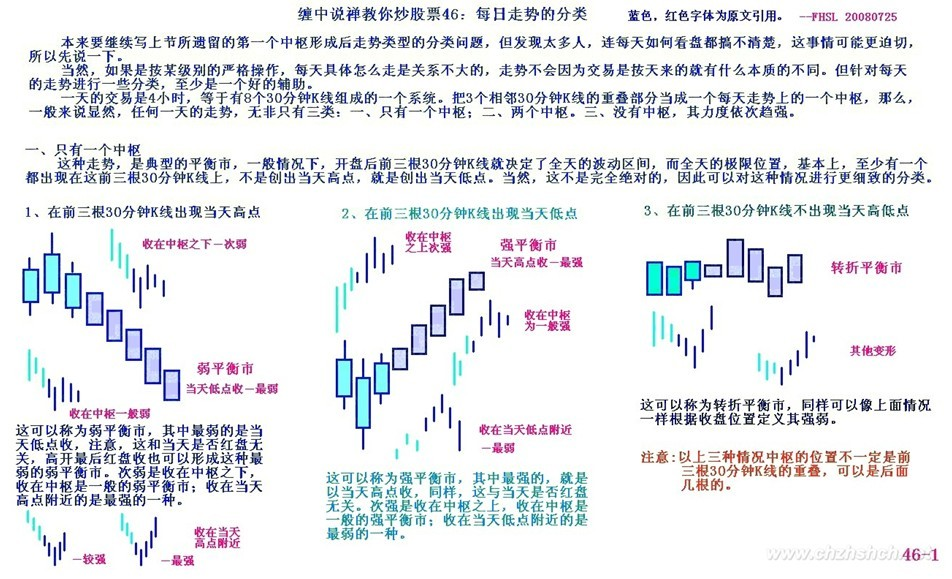 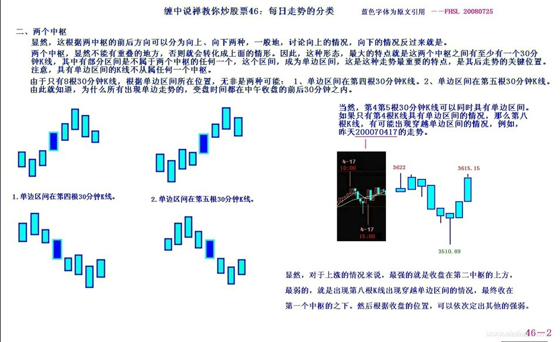 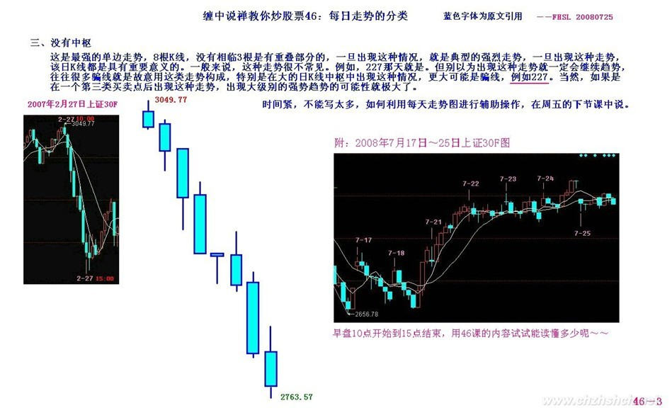
每日解盘 (2007-04-18 15:38:33)
今天是一个比较强的强平衡市，从纯技术的角度，一旦明天不能马上从这里往上突破，就至少会出现盘整级别延伸。也就是说，明天如果不能出现这两天震荡所形成中枢的第三类买点，则有下破 5 天线的可能就加大了。当然，如果明天很快就站在今天盘整区间上震荡上行，那就继续观察下一个中枢的上移。
上面说的是纯短线技术方面的问题，基本面上，该出的消息被推迟，也是造成今天走势的直接原因，但这东西本周一定出来，但究竟有多大意义，估计只对基金等有影响，但这轮行情，基金丑态毕现。
今天最好玩的是事情就是那汉奸基金的破事被公开了，当然，这事情本 ID 早知道，而且本 ID 那 14 只股票里有两只 999、343，那汉奸都有，所以当时 999 打回 14 元下时，本 ID 就说过，不想让汉奸以及老鼠仓出太高了。本 ID 以前说过，要实验一下阻击基金，探讨一下把基金给清盘的可能，本 ID 的话不是白说的。文章还在，有兴趣者可以去复习一下。
今天，本 ID 有点想八卦一下，因为今天 000416 第一个翻出两倍多，这是元旦后说的三只里的一只，调查一下，有谁能从 3 元拿到现在？其他，000777 等很快也两倍了，还有人拿着吗？如果都没有，那么为什么？是不是操作上有些问题需要解决？那 14 只个股，平均涨幅，从元旦开始，超过 100% 了，如果元旦到现在不超过 100% 的，必须彻底反省自己的操作。 (2007-04-18 15:38:33)
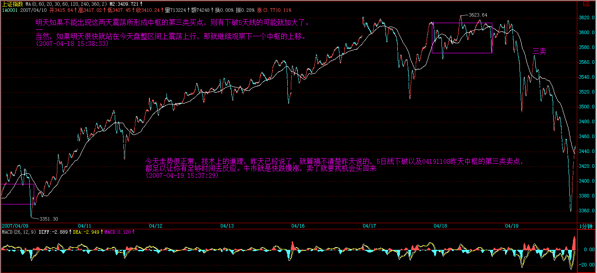 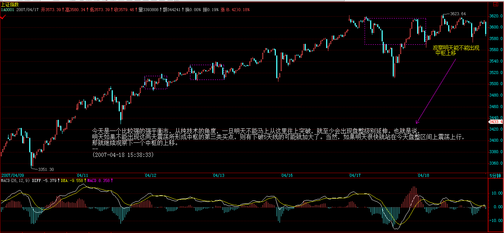
[ 匿名 ] 首钢股份
2007-04-18 15:42:26
本应于 4 月 19 日上午 10 时公布的 GDP 数据突然被延后至下午 15 时公布，而 15 时正是 A 股的闭市时间。据了解首季 GDP 数据可能超出此前预期，因此市场猜测这是为了避免引发更大幅度的上涨；同时市场人士也认为央行可能提早加息，以及加快推出新措施冷却股市。
女王，我们小散应如何应对？看图操作，比如今天下午的大幅度回试，根本来不及啊！
==
来不及，就不参与，市场渠道当然不是完全公平的，这没办法。 只参与自己能把握的，请记住。 (2007-04-18 15:53:58)
[ 匿名 ] 三藏
2007-04-18 16:23:08 老大，深证 5 分钟今天的盘背给解说下 为什么撑到第三个才跌 我是第二个红柱子出去的 另外，跌完什么时候补仓没看出来
老大务必给说下！！！！！
==
你应该去看看 1 分钟图就明白了。 (2007-04-18 16:27:37)
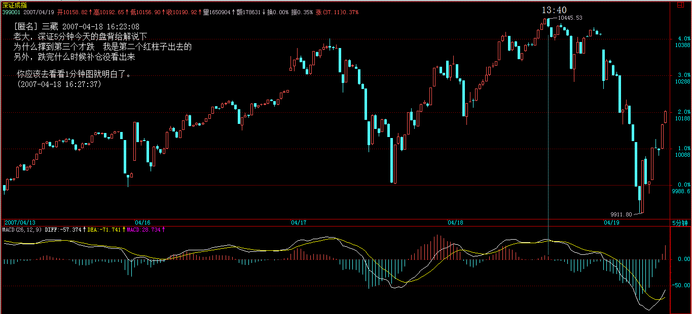 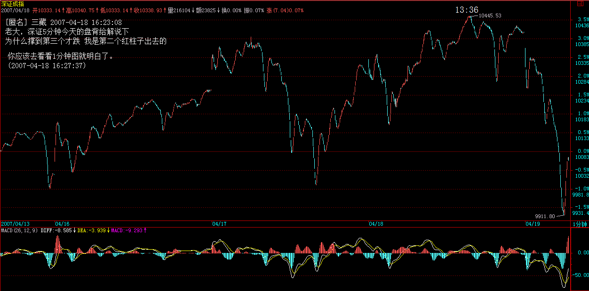
[ 匿名 ] 新年好 2007-04-18 15:41:14
向缠姐问好！缠姐辛苦了！
缠姐，今天大盘在 14：16 的时候为什么直接上去了呢？我在 2 点左右清仓了，本来还挺高兴看他下跌呢，想等着跌稳了补回来的。谁知道 14：16 的时候就直接上去了，搞得我不得不在 14：40 左右补仓。
今天的下跌跟昨天几乎一样啊，怎么结果这么不一样？这个该如何判断啊？均线乖离什么的都说不通阿，昨天也一样啊。我尾盘的时候又满仓了，会不会有短期危险？明天到底会怎么样啊？
==
他为什么不能直接上去？例如 ABC 三段，前面两段都有了，C 当然可以直接一段就上去了。 (2007-04-18 15:49:58)
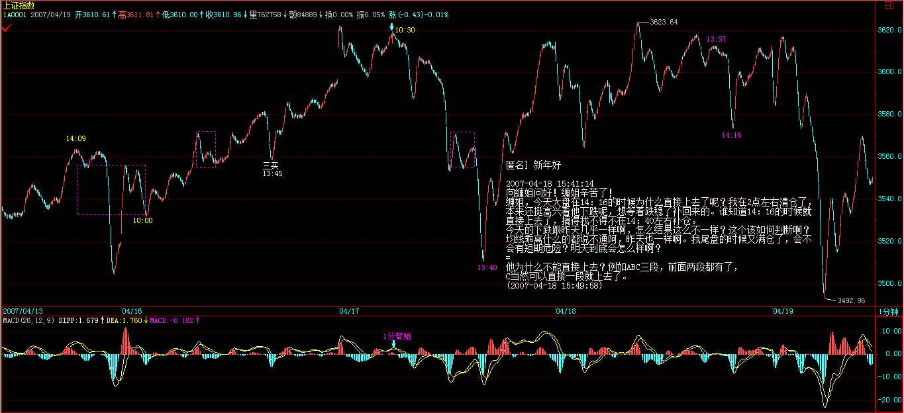
[ 匿名 ] 窗外 2007-04-18 16:18:42
缠 mm，今天的教程里，中枢就是 8 根 k 线中，第 1 次出现的 3 根重叠，是吗？
==
是，但这种只针对每天的走势图。 (2007-04-18 16:21:20)
[ 匿名 ] 新年好 2007-04-18 16:00:32
注意，以上三种情况中枢的位置不一定是前三根 30 分钟 K 线的重叠，可以是后面几根的。
请问缠姐，今天大盘应该属于哪种？一个中枢？那么是前三根 K 线的重叠吗？
还有上个问题看到你的回答了，但是你并没有给我讲讲怎么判断在 14：16 的时候应该回补啊？我还看不出来，如果出现这种情况我们应该怎么判断啊？
==
今天前三根有重叠，就是了。
下问题，从 04171453 开始看，用中枢震荡的力度比较。你看是今早的强还是下午的强？ (2007-04-18 16:04:16)
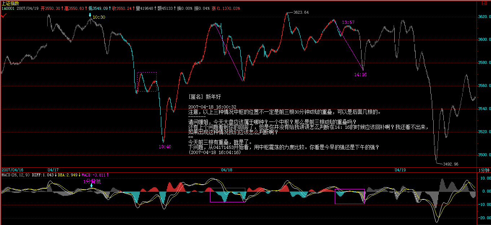
[ 匿名 ] 小八
2007-04-18 16:36:25 缠中说禅
2007-04-18 16:04:16 [ 匿名 ] 新年好
2007-04-18 16:00:32 注意，以上三种情况中枢的位置不一定是前三根 30 分钟 K 线的重叠，可以是后面几根的。
请问缠姐，今天大盘应该属于哪种？一个中枢？那么是前三根 K 线的重叠吗？
还有上个问题看到你的回答了，但是你并没有给我讲讲怎么判断在 14：16 的时候应该回补啊？我还看不出来，如果出现这种情况我们应该怎么判断啊？
==
今天前三根有重叠，就是了。
下问题，从 04171453 开始看，用中枢震荡的力度比较。你看是今早的强还是下午的强？
缠姐老大，我怎么觉得是下午的看ｍａｃｄ的要强一点呢？１７日的那段离开力度反倒弱一些呢。而下午的柱子是大力放长了。感觉是力度大了。根据中枢震荡力度比较，怎么觉得今天该是更往下一些呢？请缠姐明示，小弟看了很久都还不能明白。
==
171453 到 181001 这段，和 181335 到 181416，两段谁强？绿柱子面积谁大？显然是前面的大，前面的强。也就是后面这中枢震荡，向下的力度没有前面的强，那前面的都能拉回中枢，为什么后面的不可以？这在关于中枢震荡的课程里都有，请再次研究一下。 (2007-04-18 16:41:09)
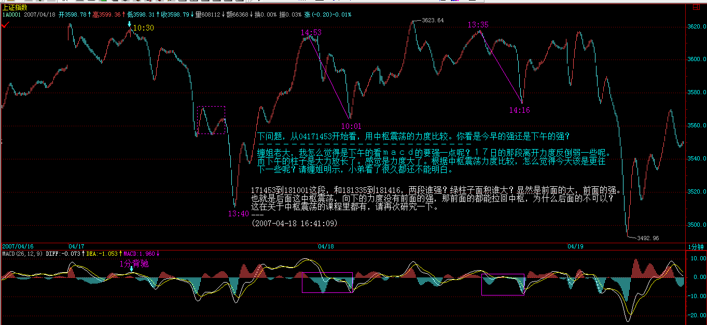
每日解盘 (2007-04-19 15:37:29)
今天走势很正常，技术上的道理，昨天已经说了，就算搞不清楚昨天说的，5 日线下破以及 04191108 昨天中枢的第三类卖点，都足以让你有足够时间去反应。牛市就是快跌慢涨，卖了就要找机会买回来，否则，牛市与你无关。基本面上，数据最终如何，问题都不大，就算是加息，也没什么大不了的。
今天 1030 到 1330，三 K 线形成 3520 上下的中枢，短线就看这能否重新上穿，一旦上穿站稳，就继续原来走势。当然，站在本 ID 的角度，完成深圳 1 万，上海 3500 的第一目标，是希望在这里出现一个整固过程，这在前面也说过，这样才会比较稳健。当然，目前资金流入太快，本 ID 这类稳健的想法，不一定能得到市场的认可，本 ID 只看市场的反应，市场想干什么都可以。个股方面，补涨的、故意玩坏业绩的，都会继续表现。
继续八卦一下，今天这样的走势，可以把人分为几类：
一、吓傻了。
二、被夹空在说，我都说要调整的，其实从 3000 点开始就说了，今天终于可以自渎一下。
三、实干型，一看早上开盘没有形成第三类买点可能，就先走，最迟在 04191108 懂得把有卖点的股票走掉的，然后等待买点回补的。
四、激进型，在大跌中还敢于对有买点的股票发动进攻的。真正做到只关心买卖点，有卖点就卖，有买点就买，不会被大盘的波动而影响。
请问，你属于哪一种？ (2007-04-19 15:37:29)
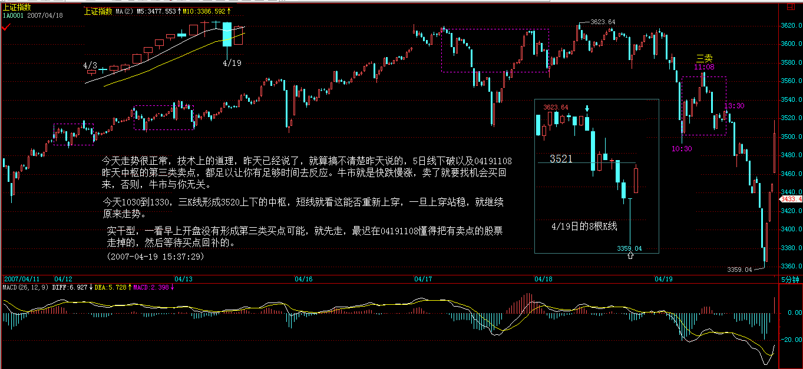 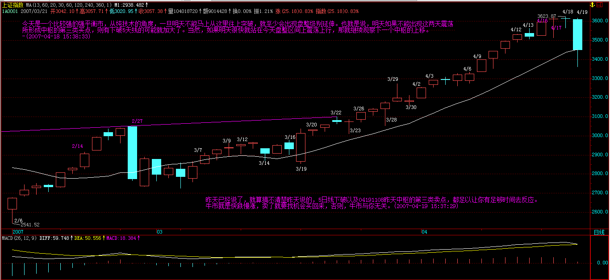 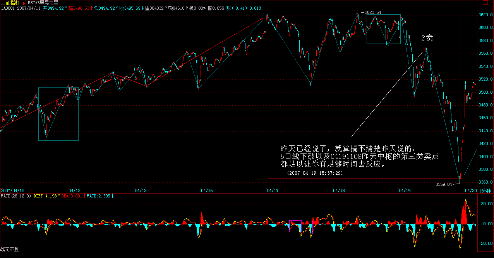 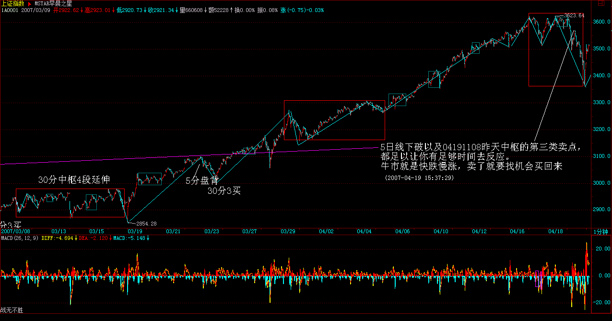
[ 匿名 ] 大妈妈
2007-04-19 16:30:56 缠美眉，今天大盘三十分钟的走势只有一个中枢，收盘在中枢之下，对照你昨天的课程应该是一个转折平衡市，是意味下跌转上涨还是从前阵子的上涨转折为下跌的趋势。如果是下跌形成趋势应该还有一个 30 分钟的下跌中枢吧。这样分析对吗？请指点！！！
==
属于比较弱的平衡市，全天高点在前三就出现了。 (2007-04-19 21:30:25)
[ 匿名 ] 三藏
2007-04-19 21:55:55 老大，今天早上的下是怎么造成的？ 没看出来！
还有，下午最后的上为什么那么有力度？
没有背啊！
==
要搞清楚和哪一段比较，如果 1 分钟看不清楚，看 5 分钟的，这种黄白线没回抽的，当然不会是 5 分钟的背驰，但一定是 5 分钟以下级别的背驰，很清楚可以看出该是哪两段比较。 (2007-04-19 22:06:29)
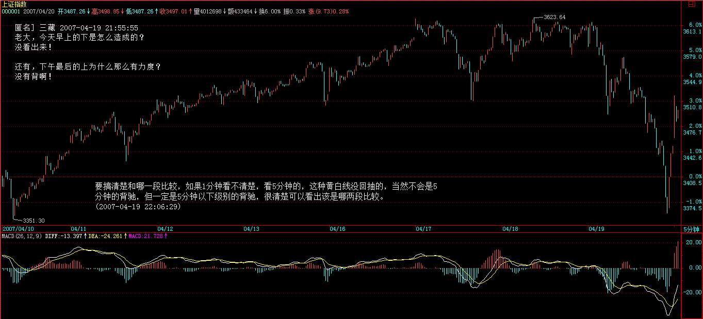 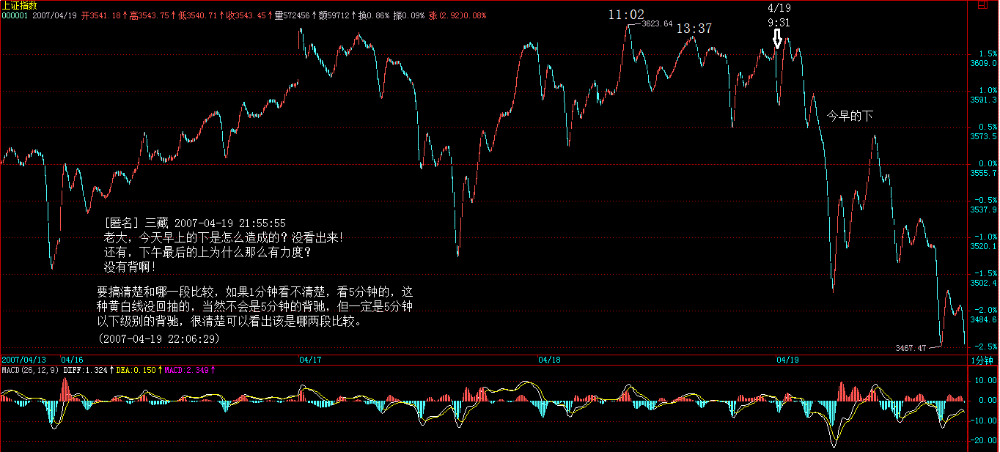 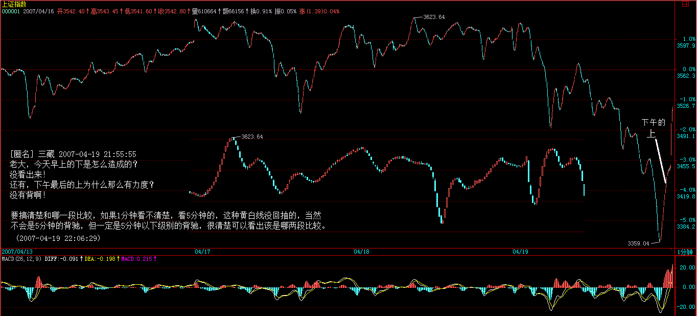
今天的速度太慢，很难把回复贴上去，大概今天震荡厉害，把人都震到新浪上来了。市场经验是需要磨练的，平等对待买卖点，这样你的技术会提高一个层次。
如果技术不好的，例如本 ID 让你看 5 日线，如果连 5 日线都看不好，那就是心态问题了，这就要彻底反省了。心态不好，脑子里总是有幻想，而不是根据市场实际走势来，这样，学什么技术都没用的。
知道，明白，看得懂，和能操作好，这里的差距大了去了，所以，以前本 ID 就说过，都学本 ID 的理论，并不会影响本 ID，最后比的是人本身。
如果连最基本的，永远不追涨杀跌都做不到，那就没什么可说的。
先下，再见。
(2007-04-19 22:16:50)
[ 匿名 ] 朗月无花
2007-04-18 16:07:44 对于不能保证每天看盘的人如何操作才是最好的？？？？
==
至少看 30 分钟级别操作。 (2007-04-18 16:24:01)
[ 匿名 ] 缠心雕龙
2007-04-18 15:44:56
博主好。
向上的走势 a+A+b+B+c，A、B 是 30f 中枢，如果 c 是一个强劲的 1f 走势，且已经有 c 对 b 不背驰了（但 B 没有出现严格意义上的三买），此时能认为 B 完成了吗？
==
完成是一种形态，和幅度无关。这种情况，很正常，次级别总是从次次级别生长出来的，所以前面的课程里就提到，次次级别回试构成的是次级别的第三类买卖，比该级别的要早点，实际操作上，也可以利用这个先操作，这没有任何问题。
后续如有 c 内小级别背驰导致的 30f 级别转折 C，从同级分解观点看，能否认为 c 上的小级别背驰点就是分解点，而 a+A+b+B+c 是一完整趋势？ = 这说过了，就是这样分解的。
(2007-04-18 16:20:01)
[ 匿名 ] 袖手旁观
2007-04-18 15:47:58
缠 mm，多日没来发言，提个疑问： 测度论应该是能解决力度测算，但是背驰必转折这一条不能由测度直接推导出来吧？
==
可以利用这个去证明。 (2007-04-18 15:51:39)
两只老虎
2007-04-19 16:01:10 神仙姐姐，我一遇到大跌怎么就这么麻木呢？ 我总是习惯先买后卖，对先卖后买极其迟钝。
== 这是初学者普遍的毛病，买点卖点是平等的。 (2007-04-19 21:21:26)
[ 匿名 ] 好人好报
2007-04-19 16:26:45
学习缠妹妹理论 , 觉得在大的买点买比较安全 <30 分钟 > 在卖点上以 5 分钟的卖点比较好 . 如果在大的下跌趋势中如果也按 5 分钟 , 一分钟买点买难免要受当日不能卖的局限性 , 不知缠 MM 我说的对与否 ?
==
对 T+1 的局限是必须考虑的。但一般来说，特别巨大的下跌，如果真有 5 分钟的背驰，其反弹力度已经足够短线。当然，这是对小资金来说的。 (2007-04-19 21:28:43)
[ 匿名 ] dliss
2007-04-19 15:44:11 我哪一种也不是 把钱都买了股票
然后，开始欣赏跳水表演
实在没着了，傻大胆呵呵，下午 13：30 就把上午出的股票回补了 呵呵，本周成果损失殆尽：〉比上周五的只多了 200 块钱
==
继续学习，必须要等待真正背驰才能回补，1330 有背驰吗？当然，个股是有差异的。 (2007-04-19 15:52:58)
[ 匿名 ] 新浪网友
2007-04-19 15:39:58 缠主好 : 今日走势如缠主所料 , 真是神 . 不过今天我们的中长线品种 002051( 中工国际 ) 没有出 ,18 元左右分批进的 , 打算持有到 50 元 , 不知道缠主对这个股票有何指教 ? 卑下洗耳恭听 , 万分感激 .
==
就算长线的，也应该学习在大点的卖点进行卖出，买点再回补的操作，这样能把成本降低，而且可以增强持有的灵活性。当然，这需要一定的技术支持，所以要学习。 (2007-04-19 15:49:25)
[ 匿名 ] 新 5309 年好
2007-04-19 15:50:20 激进型，在大跌中还敢于对有买点的股票发动进攻的。真正做到只关心买卖点，有卖点就卖，有买点就买，不会被大盘的波动而影响。
我属于这种，看来太激进了，我是上午 10 点左右把能清的清掉了，可惜就是补得太早，看着几次 1 分钟都有背驰的样子，就进了，忘了看 5 分钟还在下跌中。以后一定要改掉这个毛病。不过最失败的是昨天尾盘满仓，如果不是尾盘满仓，今天会更好点。
==
激进是需要技术支持的，技术达不到，可以采取相对保守的作法，例如，跌破 5 日线，除非出现特别明显的较大级别背驰，否则还是持币等待。就算重新上涨，还有第二、三类买点可以介入。 (2007-04-19 15:55:43)
[ 匿名 ] 巴索林
2007-04-19 15:56:46 俺是第 4 种，只是对买卖点把握还是不太准，比如下午就分批进了几次，再次严重检讨，好好学习
==
必须等待真正的背驰，而且这种走势，从心理上也知道肯定要跌到 2 点半以后。这是一个经验问题。就像跳水经常在 1445 分一样。 (2007-04-19 15:59:24)
[ 匿名 ] 飞
2007-04-19 15:59:12 博主 , 有些股票本来买点出来了可大盘一跌也跟着再往下跌啊 ! 大盘的走势是不是很重要 ? 会影响个股的走势吗 ?
== 大盘不好，一定要等待大一点级别的买点，或者在尾盘出现的买点。否则不一定能逃过 T+1 的限制。 (2007-04-19 16:00:33)
[ 匿名 ] 新浪网友
2007-04-19 20:29:57 今天上午看 600855 走势很强，就进了，没想到下午跌破 5 日线了， 请教缠姐是否会继续下调？
==
这问题说过多次，除非是有较大级别的买点，否则，买股票都应该在下午，特别在走势不明朗的时候。而且这股票，早上也没有任何买点，所以必须要好好总结。 (2007-04-19 21:44:54)
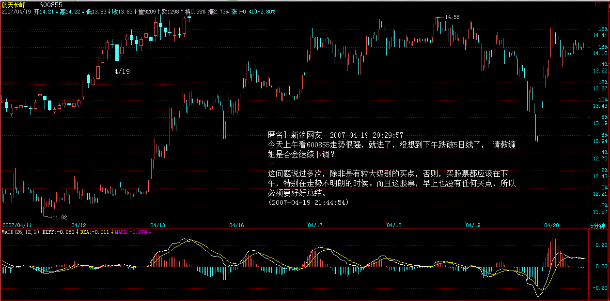
[ 匿名 ] 新浪网友
2007-04-19 16:00:53 我是激进型，上午走了后在下午 13.47 加了隧道股份，可惜又新低了。呵呵呵呵呵呵呵呵
==
要学会等待真正的背驰。 (2007-04-19 16:03:02)
谢谢，缠妹妹，我当时认为 13.47 是一分钟的背驰，我判断有误？
==
还要学习，这种走势，后面是一个标准的小的第三类卖点。 (2007-04-19 21:55:34)
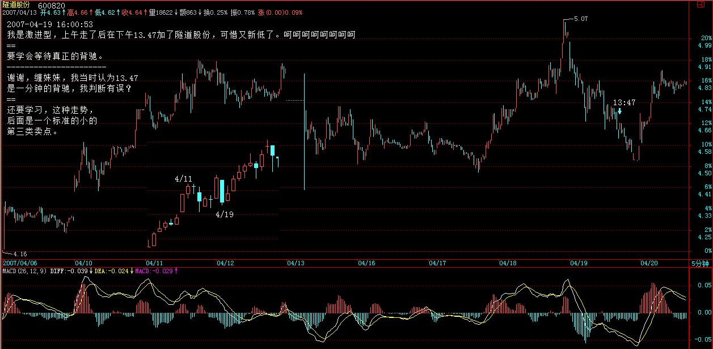 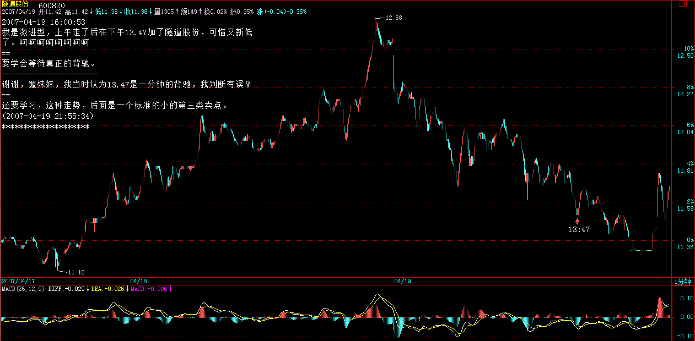
[ 匿名 ] 可惜了
2007-04-18 15:51:02
入市较迟，拿的是９３８，可惜涨得不多，估计９３８是姐姐股票里涨得最少的
==
这是最晚说的，2 月初，10 元上下说的，到现在 50%，是有点少，不过这股票从 100 元下来的，本 ID 只能说那么多了。 (2007-04-18 15:56:39)
[ 匿名 ] 呼呼
2007-04-18 15:52:03 姐姐，不对吧，所有的都涨了 100% 了吗？ 938 好象没有呢吧？
==
没有说都有，有 3、4 只没有吧，本 ID 说的是 14 只的平均。 (2007-04-18 15:58:50)
[ 匿名 ] 新浪网友
2007-04-18 15:58:26
美女姐姐 ,000778 还没翻倍 , 可以等到那一天吗 ?
==
这翻倍了，第一批都是元旦前说的，如果你买的比较高，问题也不大，涨了那么多，你听过这股票的消息吗？知道他背后的股东背景吗？ (2007-04-18 16:01:15)
[ 匿名 ] 大鱼小鱼落鱼盘 2007-04-18 16:06:28
缠中说禅
2007-04-18 16:01:15
[ 匿名 ] 新浪网友 2007-04-18 15:58:26 美女姐姐 ,000778 还没翻倍 , 可以等到那一天吗 ?
== 这翻倍了，第一批都是元旦前说的，如果你买的比较高，问题也不大，涨了那么多，你听过这股票的消息吗？知道他背后的股东背景吗？
缠主，现在还可以买 000778 吗？
==
本 ID 只建议在买点买股票。如果错过，就等下一个，绝对不能养成不在买点买股票的坏习惯。 (2007-04-18 16:07:41)
[ 匿名 ] 机会在哪 2007-04-18 15:58:09
请问缠主 , 我现在 50 万入市短期还有没有机会赚钱 ?
==
这种心态本来就是错的，先把本 ID 关于股票资金的性质那几节看看，读读其中关于某人的悲惨故事。 (2007-04-18 16:06:29)
[ 匿名 ] 悟禅
2007-04-18 15:54:40 感觉老师真是用心良苦，太谢谢啦！汇报一下，自元旦至今，股票帐户（资金没进出过）的收益已超 100％，自觉离老师的要求尚远，唯有继续努力。
==
靠的是你自己，本 ID 只是助缘。 (2007-04-18 16:10:05)
微微果二
2007-04-18 16:07:30 天啊，我得跳着留级了！！ 元旦到现在我才刚刚解套赢利！ 半仓银行股，严重踏错节奏！ 股票个数分散，也属缠姐说的小资金的大忌！ 55555555555 缠姐，现在还来得及纠正吗？ 要不要现在把手头股票逐个清仓，然后单做一两个股？ 请缠姐指示纠正方法。
==
先学习，有时候等待也是一种修正，那课程学好了，什么时候都有 机会。
(2007-04-18 16:11:21)
[ 匿名 ] longs
2007-04-18 15:55:01 缠 MM, 你觉得现在基金没有有越来越被边缘化的趋势 ?
==
三十年河东，三十年河西，这市场是开放的，只要他们能改过自新，还是好孩子。 (2007-04-18 16:23:27)
[ 匿名 ] II
2007-04-18 16:09:26 谢谢缠 MM。。
又在给我们送钱啊！！！
我要集中火力。938！
==
本 ID 从来不让人在非买点买股票，任何好股票也都需要好买点。 (2007-04-18 16:25:12)
一粒米
2007-04-18 16:09:22 缠 MM 好 ! 问个问题： 我们小散每次有利润后将它变为 0 成本的股票好，还是变成现金再搞第二个股票？我发现几个月前的股票留下来的话利润自动升值了。且现在买不到以前的平货了。但股票多了，管理起来又很烦。你有好建议吗？( 我的资金才 3W)。谢谢 !
==
你可以选好几只节奏有错位的股票，当成股票池，任何不断反复操作这些股票，在这些股票中不断根据买卖点买卖换股，每次只操作一只，最多两只。 (2007-04-18 16:29:35)
[ 匿名 ] 后知后觉
2007-04-18 16:22:21 禅主我已经复制了 12 遍了： 1，禅主说的基金，看到了。另外不知道 QFII 想干什么？？或许另有它图，用香港的金融期货来对冲做空大陆股市？按理说，他们不至于目前这么弱智吧？ == 为什么外国人就不可以弱智？谁都有干错事情的时候。当然，有很多外国进来的弄得很好，只是不在水面上。
2，请禅主帮忙：002128，按照我的方法判断，进了，也有同学跟进，可尾盘下的很凶，估计套了他们 2％了，我认为那是它短线的极限低点了。 在群里我已经公开道歉了，或许看走眼了。责任重大，请禅主就这支新股给予必要的指导！ 谢了！
==
看 1 分钟图，上面走得很标准。 (2007-04-18 16:34:18)
[ 匿名 ] 白玉兰
2007-04-18 16:17:39 [ 匿名 ] 白玉兰
2007-04-18 16:04:22 缠中说禅
2007-04-18 16:01:15 [ 匿名 ] 新浪网友
2007-04-18 15:58:26 美女姐姐 ,000778 还没翻倍 , 可以等到那一天吗 ?
==
这翻倍了，第一批都是元旦前说的，如果你买的比较高，问题也不大，涨了那么多，你听过这股票的消息吗？知道他背后的股东背景吗？
+++++++++++++++++++ 那 915 很多机构跳出来推荐 , 是否对操作和走势有影响 ?
+++++++++++++++++++
妹妹回答一下我的问题啊 .
==
那也很正常，市场是公开的，本 ID 不能说本 ID 的股票就不允许任何人说，爱说什么都可以，关键是公司本身。 (2007-04-18 16:36:35)
[ 匿名 ] 新浪网友
2007-04-18 16:38:06 后知后觉，姐姐终于回答你了 , 可怜的人 , 可能是你平日里太嚣张了，姐姐不喜欢你的缘故吧．
==
不是这个原因，只是本 ID 有其他问题还没回答完。问题太多，本 ID 不可能每一个都回答到，抱歉。 (2007-04-18 16:43:32)
各位，对不起了，必须马上出门，要去一个比较远的地方，再不走，就走不动，塞车。
先下，明天见。 (2007-04-18 16:49:01)
=====《论语》详解：给所有曲解孔子的人（64） 486e105c010009vo=====
[ 匿名 ] 墨香小老虎
2007-04-19 15:53:52 博主：
我短差没有做好。下午没有补在最低点。
利润少了 1 万元。
==
技术不好的，宁愿卖早买晚。 (2007-04-19 15:57:09)
一粒米
2007-04-19 15:59:25 缠 MM 好 ! 看来我的心态还是不稳，今天居然没有反应，没有操作。把这两周的利润洗掉了 62%。严重反思中。
== 自己没把握时，可以半仓，这样肯定不会错。 (2007-04-19 16:02:03)
对不起，1630 分有一个生意要谈，晚上 9 点再上来。
先下，再见。 (2007-04-19 16:04:25)
各位晚上好 (2007-04-19 21:15:31)
[ 匿名 ] 工人时光
2007-04-19 21:25:26 我们上班一族的面对这种情况可怎么办呢？没事的时候在家，往往关键的一天却在上班。怎么处理这种情况啊？
==
如果你是做日线级别的，从去年拿到现在，那这样的震荡算得了什么？关键是操作的级别，没时间，技术不好，就操作级别大的。 (2007-04-19 21:58:04)